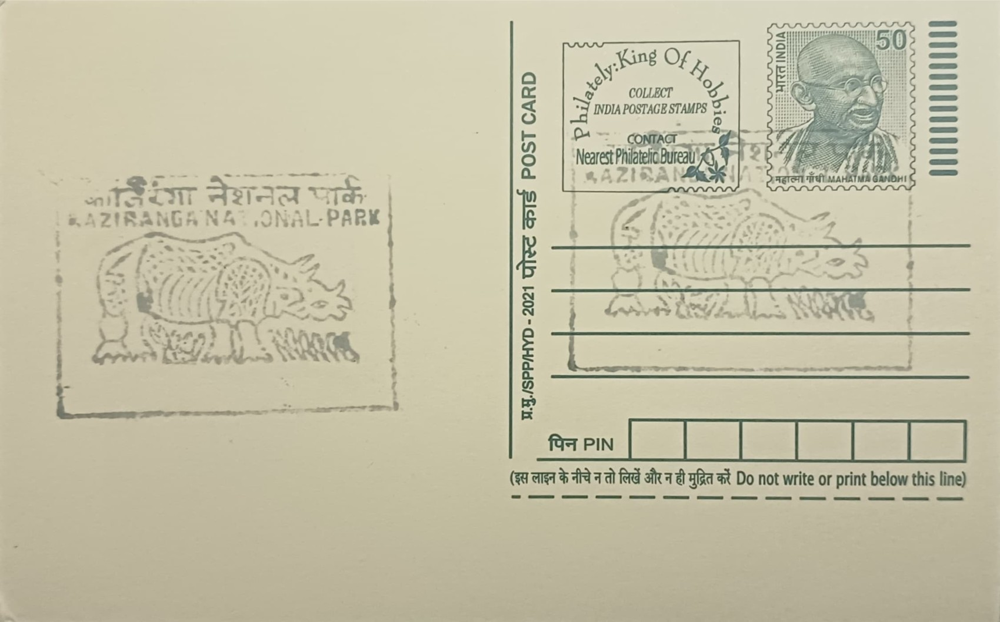

One Horned Rhino
এশৃংগী গঁড়


The story of the Indian one-horned rhinoceros at Kaziranga is tied closely to the park's own founding. In 1904, Mary Curzon, wife of Viceroy Lord Curzon, visited the area hoping to see the rhinoceros for which it was already locally renowned, but found none during her stay. Her insistence afterward that the dwindling species be protected led directly to the creation of the Kaziranga Proposed Reserve Forest on 1 June 1905, covering roughly 232 square kilometres along the Brahmaputra floodplain, a designation formalised as a Reserve Forest in 1908 and later as a game sanctuary in 1916.
Rhinoceros unicornis is the largest of the three Asian rhinoceros species and is classified as Vulnerable by the IUCN, though its status marks a marked improvement from Endangered decades earlier. Kaziranga's population represents the single largest concentration of the species on Earth, and the park's significance rests substantially on this one animal: its protection was the explicit reason the reserve was created, and the rhino's recovery here is frequently cited internationally as a reference case for how targeted, sustained anti-poaching enforcement can reverse a near-extinction trajectory within a confined, well-managed landscape.
Legal protection tightened progressively through the twentieth century. Hunting within the sanctuary was banned in 1938, and in 1954 the Assam government passed the Assam Rhinoceros Bill, imposing heavy penalties specifically for rhino poaching given the animal's vulnerability to horn traffickers. The park was upgraded to national park status in 1974 and declared a UNESCO World Heritage Site in 1985, recognitions built in large part on the strength of its rhino population. Periodic census operations, which rely on elephant-back and vehicle-based counting teams covering the park's grassland and wetland blocks, recorded 2,613 individuals in the 2022 count, up from 2,413 in 2018, with surveyors distinguishing 903 females, 750 males and 170 of undetermined sex among adults.
Poaching for rhino horn, trafficked mainly into Southeast and East Asian markets, has remained the park's most persistent threat despite these gains, with armed forest guards and anti-poaching camps deployed across Kaziranga's ranges and occasional confrontations resulting in guard and poacher casualties alike. A particularly severe stretch of losses in the early 2010s prompted the state to intensify patrolling, deploy additional watchtowers and camps, and expand the use of informant networks and faster response units, measures credited with the subsequent decline in poaching incidents even as the rhino population continued to climb.
Today the rhino population is monitored jointly by the Assam Forest Department and Kaziranga's park authorities, with periodic translocation programmes moving individuals to other protected areas such as Manas National Park to establish additional breeding populations and reduce the risk of a single catastrophic event affecting the whole species. The park's rhinos remain the centrepiece of Assam's wildlife tourism economy, drawing visitors for jeep and elephant safaris across the floodplain even as management continues to grapple with seasonal flooding of the Brahmaputra, which periodically displaces animals toward the Karbi Anglong hills and exposes them to additional risk along highway corridors.
| Date of Introduction | August 15, 1974 |
|---|---|
| Address | Sub Postmaster, |
| Kaziranga National Park SO, | |
| Golaghat (dt.), Assam - 785609. |